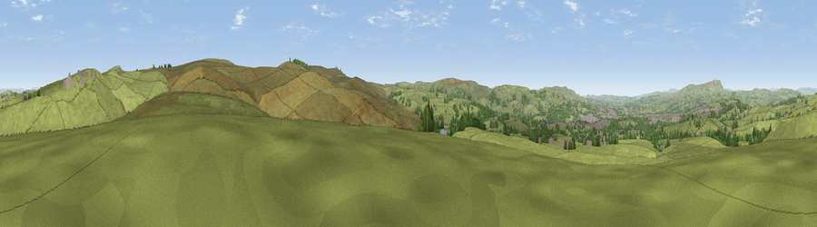

Viewpoint near Worsthorne
#16959 in England · top 29% of its area beats it · near WorsthorneThe view, rendered

A 360° render of this exact spot computed from the terrain model, tree cover and land cover — summer colours, afternoon light, calibrated against photographs of famous viewpoints. Real trees, hedges and buildings will differ in detail.
The panorama
Grey silhouette: terrain skyline in each direction (720 bearings, Earth curvature and refraction included). Dashed green: skyline with trees (+15 m) and buildings (+8 m) as obstacles. Blue strip: how far the ground is visible on each bearing.
Where the view opens
Wedge length = distance to the farthest visible ground on that bearing (vegetation-aware). Rings at 10, 25 and 50 km.
What fills the view
88% grassland · 8% woodland · 4% built-up
Angular shares of the visible panorama (visual magnitude), not map area. Landscape diversity 0.20 (0–1 Shannon).
Key numbers
More beautiful places nearby
The staircase of upgrades: each row has a higher view potential than everything closer. Driving times are estimates from straight-line distance, calibrated against real road routing — check an actual route before setting out.
| Place | Direction | Drive | Score |
|---|---|---|---|
| Extwistle | NE · 1 km | ~4 min | 59.9 |
| Viewpoint near Haggate | NNE · 2 km | ~5 min | 60.1 |
| Viewpoint near Worsthorne | E · 3 km | ~7 min | 60.9 |
| Hoof Stones Height | SSE · 4 km | ~10 min | 64.0 |
| Lad Law (Boulsworth Hill) | NE · 5 km | ~11 min | 71.5 |
| Great Hameldon | WSW · 10 km | ~20 min | 74.2 |
| Pendle Hill | NW · 12 km | ~23 min | 76.5 |
| Viewpoint near Edenfield | SSW · 15 km | ~28 min | 77.5 |
53.78983, -2.16655 · source: screening · position refined by local search. Computed location — check access rights before visiting.